The observation that inspired Lesson One
This page describes the experience that ultimately inspired Lesson One.
The story began during my doctoral studies at Shiraz University in 2017, when I became concerned about the integrity of several research projects being conducted within my academic environment.
After examining available evidence, consulting experienced researchers, and attending dissertation defense sessions, I privately communicated my concerns before publication and requested that questionable findings not be published until the issues were resolved.
The warning was ignored.
The papers were published.
What followed was no longer merely a disagreement about individual publications. It became a years-long observation of how different parts of the scientific system respond when confronted with evidence suggesting that something may be wrong.
The events described here involve scientific journals, publishers, ethics committees, universities, government agencies, regulatory bodies, and individual researchers. Together, they form a case study of scientific correction in practice.
This is not simply a personal story.
It is an attempt to document what happened after the warning.
In 2017, while pursuing doctoral studies at Shiraz University, I encountered evidence that raised serious concerns about the integrity of several research projects and publications associated with my academic environment.
The concerns involved reported experiments, claimed measurements, research methodologies, and the consistency of published findings.
Before any formal complaints were submitted, I chose a private and professional path. I communicated my concerns directly to the supervisors involved and requested that questionable findings not be published until the issues had been adequately clarified.
I believed that correction before publication would be easier, fairer, and less damaging than correction afterward.
The warning did not prevent publication.
Several years later, papers containing the same concerns appeared in scientific journals.
At that point, the question was no longer whether I should remain silent.
The question became whether the scientific record should be challenged.
One aspect of these events appears unusually rare.
The warning came before publication.
To my knowledge, documented cases in which concerns are communicated directly to authors before publication—and later reappear in substantially the same form within published papers—are uncommon. Correspondence documenting those early warnings, including emails sent to supervisors, remains available among the supporting materials.
The experience would eventually become the foundation of Lesson One.
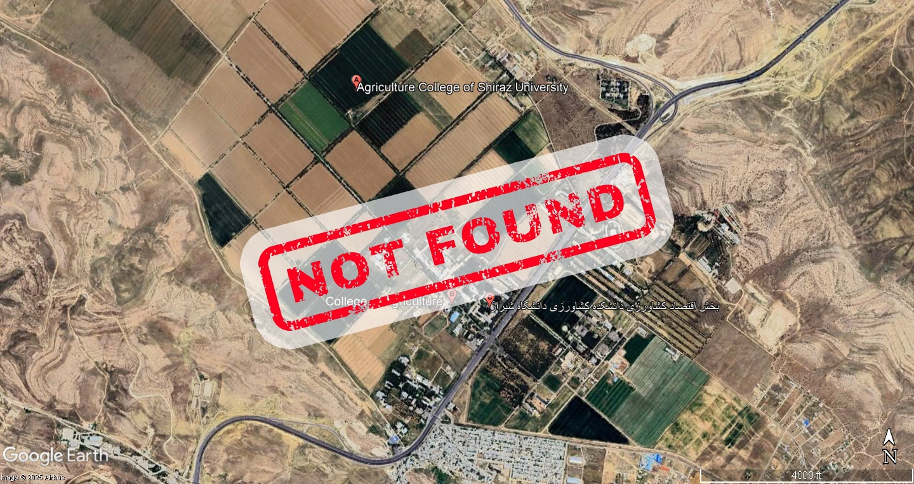
The first case concerned a reported agricultural field experiment that was later published in the scientific literature.
The publication described a multi-season field experiment and reported that the work had been conducted at specific locations associated with the research.
However, based on direct familiarity with the locations, the timing of the reported experiment, supporting documentation, witness testimony, satellite imagery, and additional evidence examined before publication, serious questions emerged regarding whether the experiment had actually been conducted as reported.
The case eventually expanded into broader questions concerning experimental location, documentation, verification of research claims, and institutional willingness to examine contradictory evidence.
Despite repeated reports to journals, publishers, and institutional bodies, the publications remain unchanged.
Within Lesson One, the case became known as “The Lost Field of Shiraz University.”
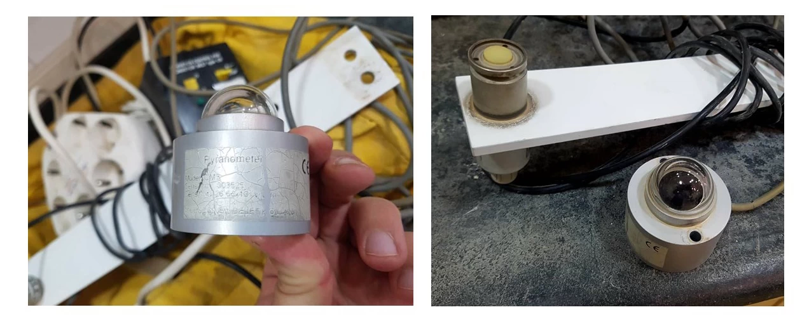
The second case involved a series of publications associated with the same research group.
Concerns emerged regarding the reported use of scientific instruments, environmental measurements, methodological descriptions, and the consistency of data presented across multiple research outputs.
Questions were raised regarding the availability of specific laboratory and field equipment, discrepancies between dissertations and journal articles, conflicting methodological descriptions, and apparent duplication of figures and data.
The concerns were reported to journals, publishers, authors, and institutional authorities.
Investigations were conducted in some cases.
No substantial correction followed.
The case highlighted a central challenge of scientific correction: Once questionable findings become part of the published literature, verifying what actually happened can become remarkably difficult.
Within Lesson One, this case became known as “Phantom Equipment.”
One notable aspect of these cases was that all of the corresponding authors associated with the questioned publications were affiliated with institutions outside Iran.
Across the publications examined in Lesson One, corresponding authors included researchers affiliated with:
The publication of the papers marked the beginning of a second phase.
Beginning in 2020, evidence, documentation, and requests for clarification were submitted to journals, publishers, ethics committees, government agencies, and regulatory organizations.
The objective was straightforward:
To determine whether the concerns were valid and, if necessary, encourage correction of the scientific record.
Responses varied.
Some organizations acknowledged the concerns and initiated reviews.
Others concluded investigations without corrective action.
Some requests for clarification remained unanswered.
Some requests for evidence were ignored.
Over time, a more important question emerged.
The central issue was no longer the papers themselves.
The central issue became the behavior of the institutions responsible for scientific correction.
As the cases developed, several recurring patterns became visible.
Some of these observations may prove useful for future researchers studying scientific accountability, institutional behavior, and research governance.
The concerns were communicated before publication rather than after publication.
This shifted the central question from correction of the literature to the prevention of questionable findings from entering the literature in the first place.
Several papers involved corresponding authors from prestigious foreign institutions who appeared largely disconnected from the underlying research process.
The arrangement raised broader questions regarding responsibility, verification, and accountability within international scientific collaborations.
At critical stages of the process, evidence emerged suggesting that individuals who were not themselves authors of the questioned papers nevertheless provided support for the disputed research.
Whether motivated by loyalty, institutional pressure, professional relationships, or sincere belief, such interventions complicated efforts to evaluate the evidence independently.
The experience also involved legal complaints and other actions directed against the individual raising the concerns.
Regardless of motive, such responses raise broader questions concerning academic freedom, transparency, and the conditions under which researchers feel able to report integrity concerns.
Perhaps the most striking observation concerned institutional continuity.
Across multiple administrative periods and changing political environments, many of the same decision-makers, committees, and influential actors remained present throughout different stages of the process.
Individuals who occupied positions of authority during the original events often reappeared later in oversight, review, administrative, or disciplinary roles.
Whether coincidental or structural, this continuity may help explain why independent review proved so difficult to achieve.
Together, these observations transformed the original allegations into something larger than a dispute over individual publications.
They became a case study of institutional behavior.
One of the most unexpected aspects of this experience was the diversity of responses observed across the scientific system.
The story eventually involved:
Each institution responded differently.
Each decision created new observations.
Together, these responses transformed the original misconduct allegations into something larger:
A case study of scientific accountability itself.
The institutions became part of the observation.
One recurring pattern was particularly notable.
In several instances, higher oversight bodies ultimately relied upon conclusions already issued by the institution whose conduct had originally been questioned.
As a result, the distinction between investigator and investigated sometimes became blurred.
The experience raised a broader question:
How should scientific systems ensure genuinely independent review when allegations concern influential institutions themselves?
The original goal was simple.
If the reported concerns were valid, the scientific record should be corrected.
Over time, however, another question became more important:
How does a scientific system respond when confronted with evidence suggesting that something may be wrong?
That question gradually displaced every other question.
The focus shifted from individual papers to institutional behavior.
From individual authors to correction mechanisms.
From allegations of misconduct to the dynamics of scientific self-correction.
Lesson One emerged from that transition.
What began as an attempt to understand a small number of publications evolved into a broader effort to understand the strengths, weaknesses, incentives, limitations, and failures of scientific correction systems.
Several lessons emerged from this experience.
Scientific correction depends not only on evidence but also on the willingness of institutions to evaluate that evidence independently.
Public accountability mechanisms often become most important when internal mechanisms fail.
The existence of formal procedures does not necessarily guarantee effective correction.
Institutions frequently balance competing interests, including reputation, stability, legal exposure, and public trust.
Researchers must be able to raise concerns without fear of retaliation if scientific systems are expected to correct themselves effectively.
Some integrity concerns remain unresolved for years.
Meaningful accountability often requires sustained effort.
The documents associated with this case include reports, correspondence, supporting evidence, figures, references, public records, and research publications collected during several years of investigation and documentation.
These materials are provided so that readers may evaluate the evidence independently and reach their own conclusions.
Available resources include:
Brief English edition of Lesson One and associated documentation.
Download PDF →Persian edition of Lesson One and associated documentation.
Download PDF →The concerns described in Lesson One were publicly documented on PubPeer to facilitate transparent scientific discussion and independent evaluation.
The following publications are associated with the studies examined and discussed in Lesson One.
The original Persian version of Lesson One was first published as a multi-part public series in 2025. A revised English edition has subsequently been prepared for an international audience.
The complete narrative archive contains fifteen interconnected episodes documenting the events, evidence, institutional responses, and lessons that emerged from this experience.
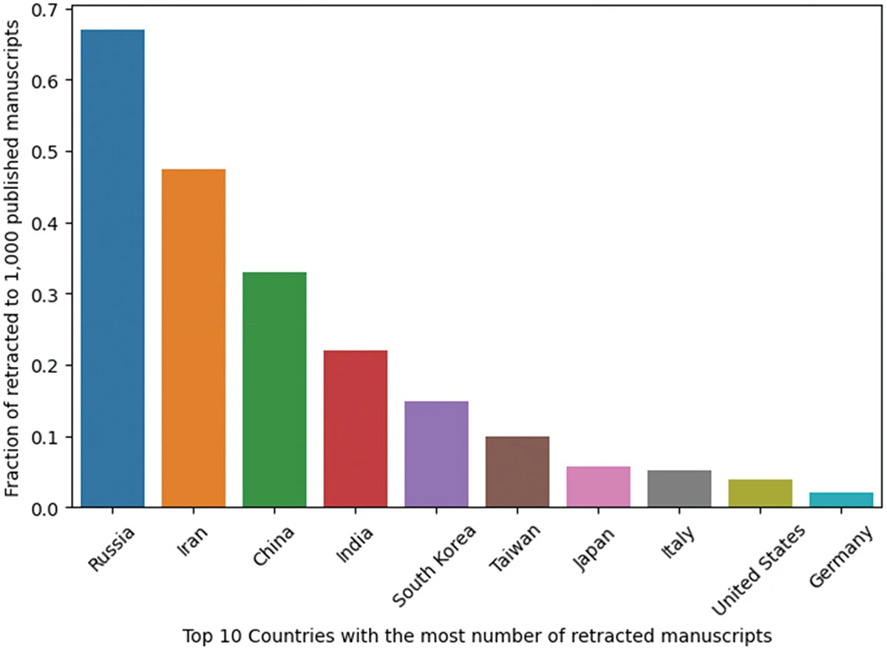
Chapter 01
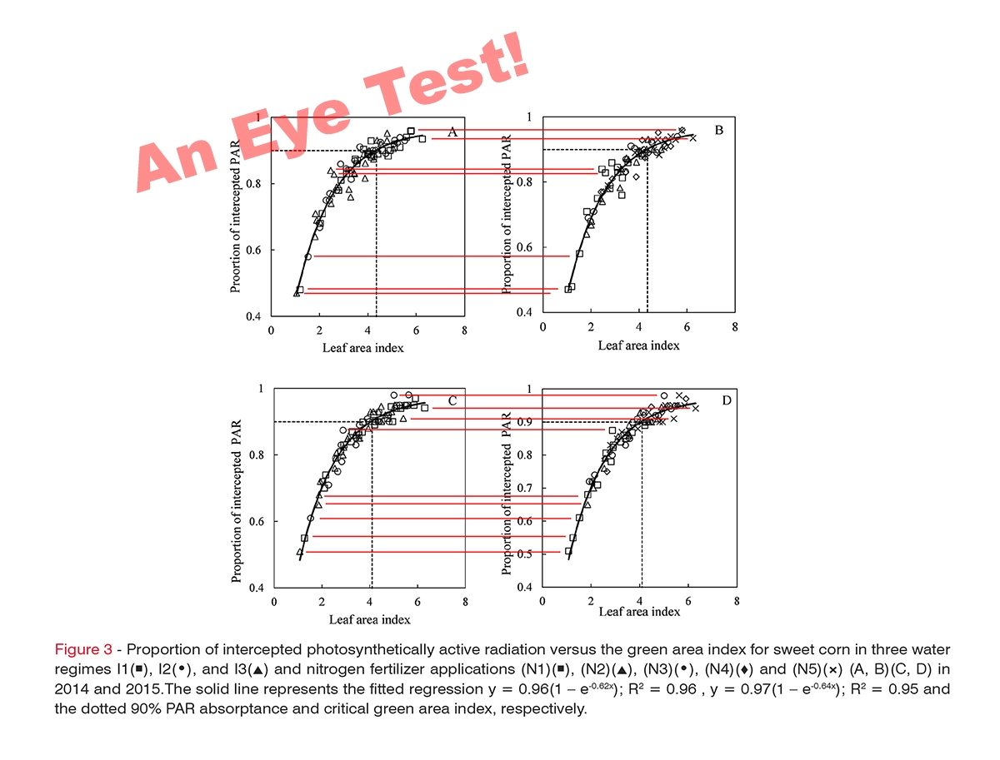
Chapter 02
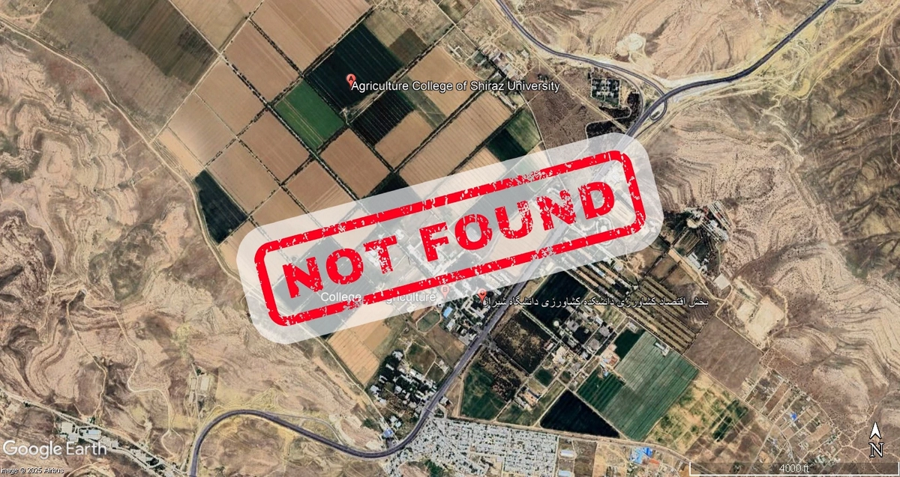
Chapter 03
Chapter 04
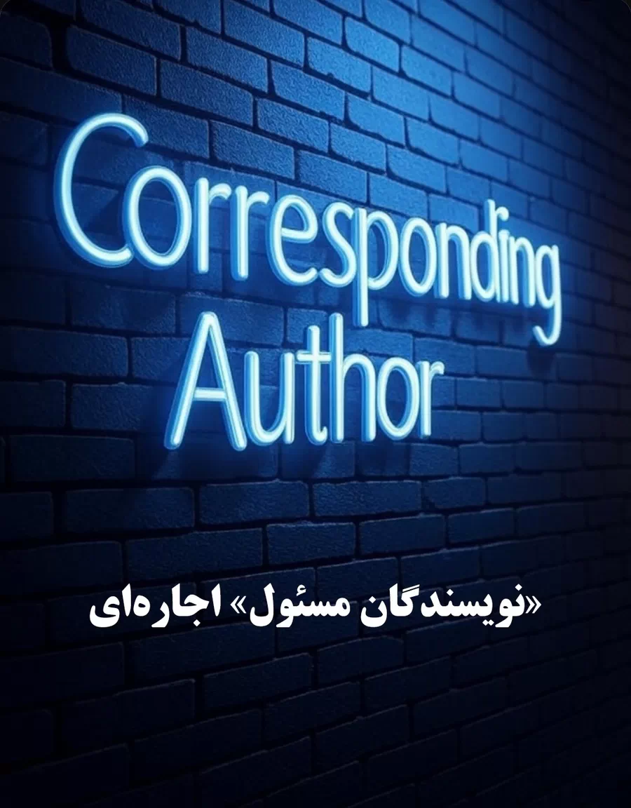
Chapter 05
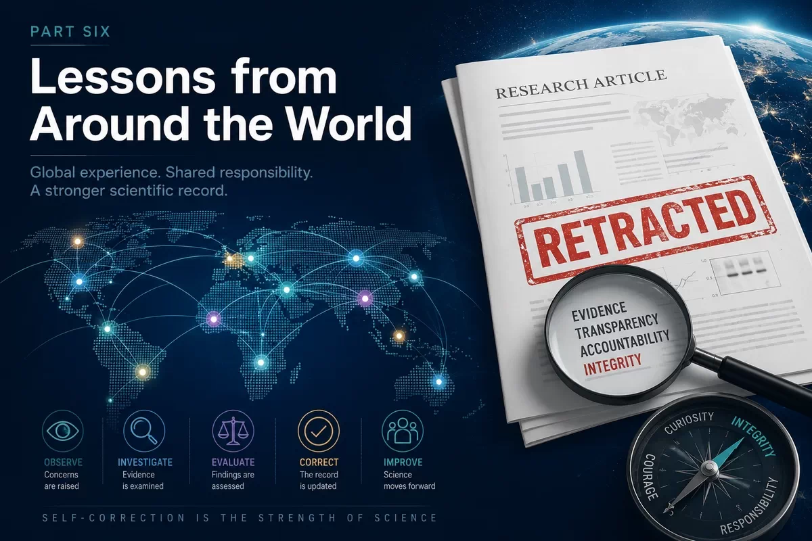
Chapter 06
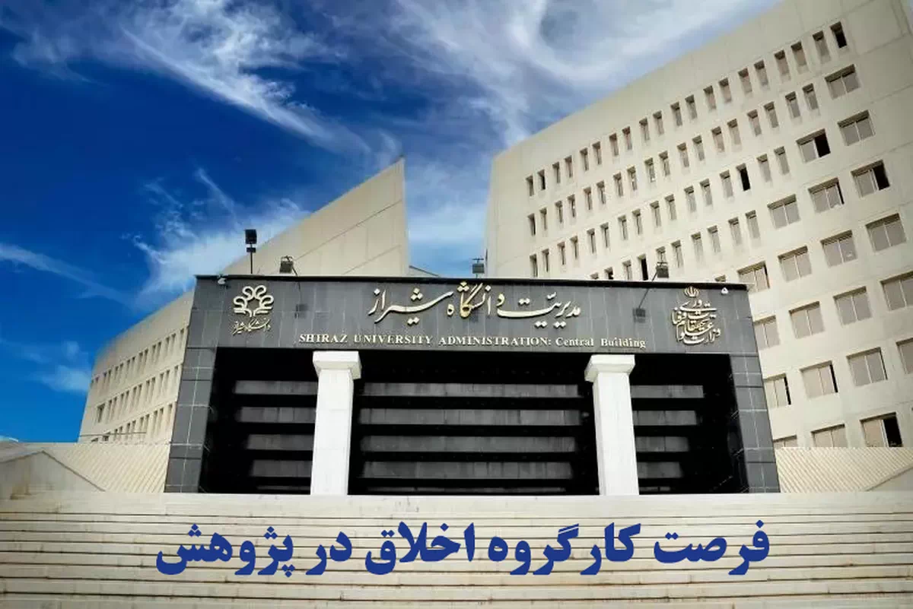
Chapter 07
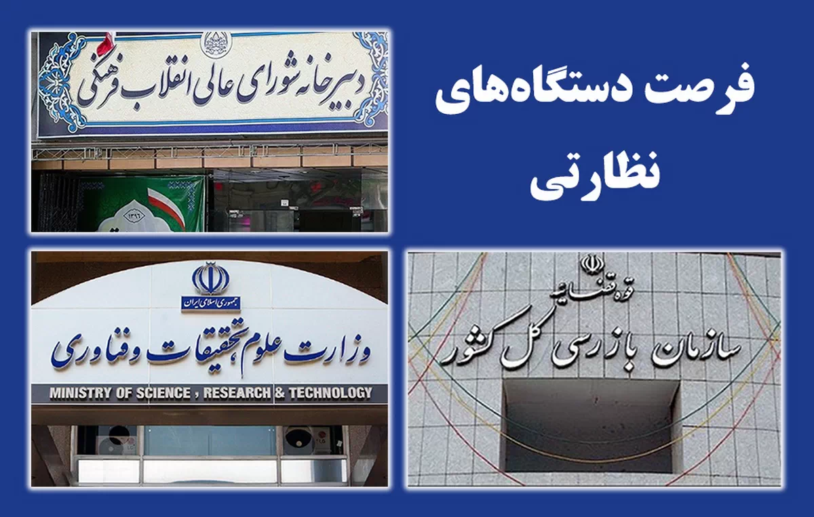
Chapter 08
Chapter 09
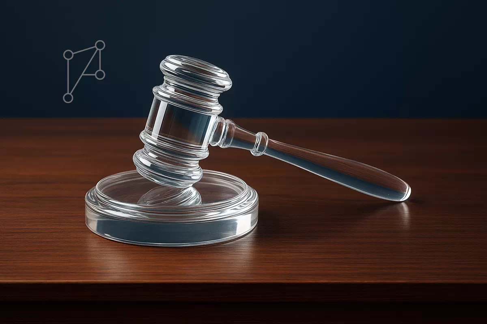
Chapter 10
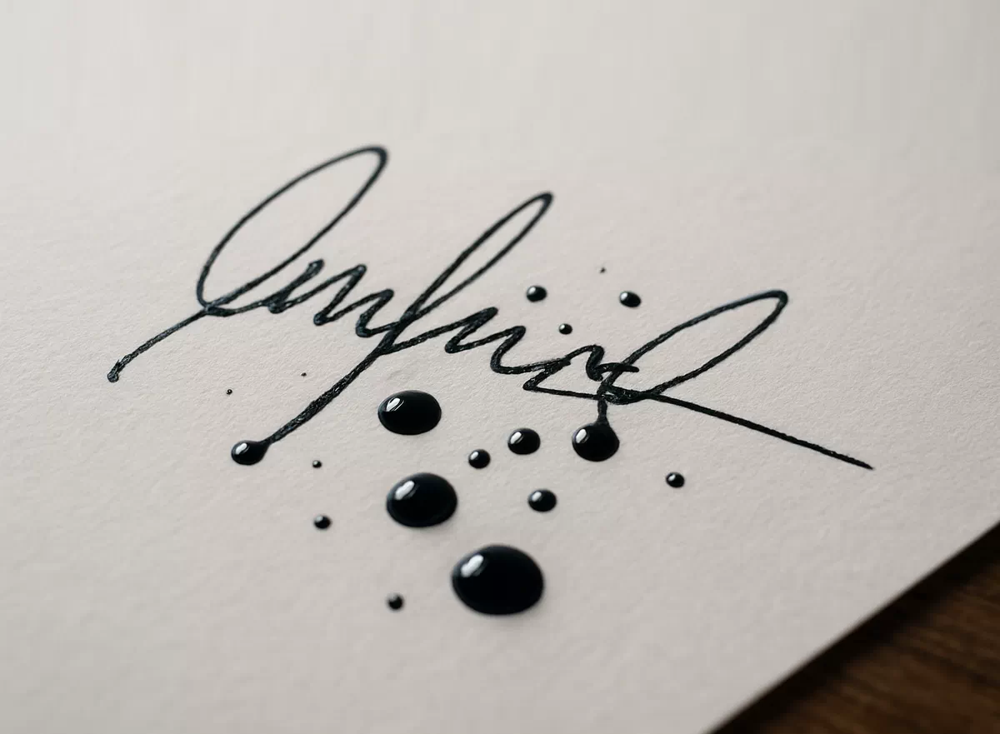
Chapter 11
Chapter 12
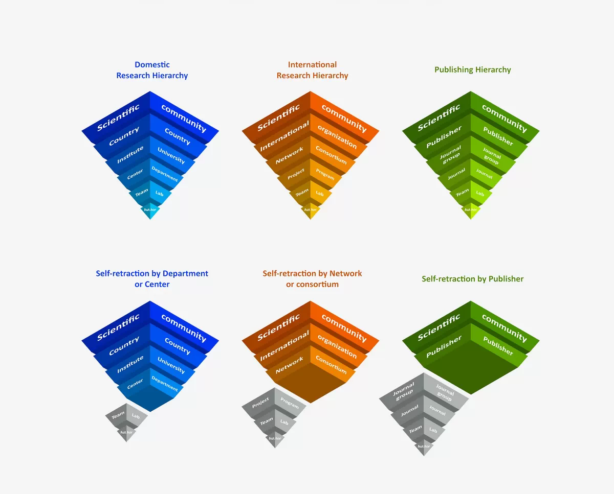
Chapter 13
Chapter 14
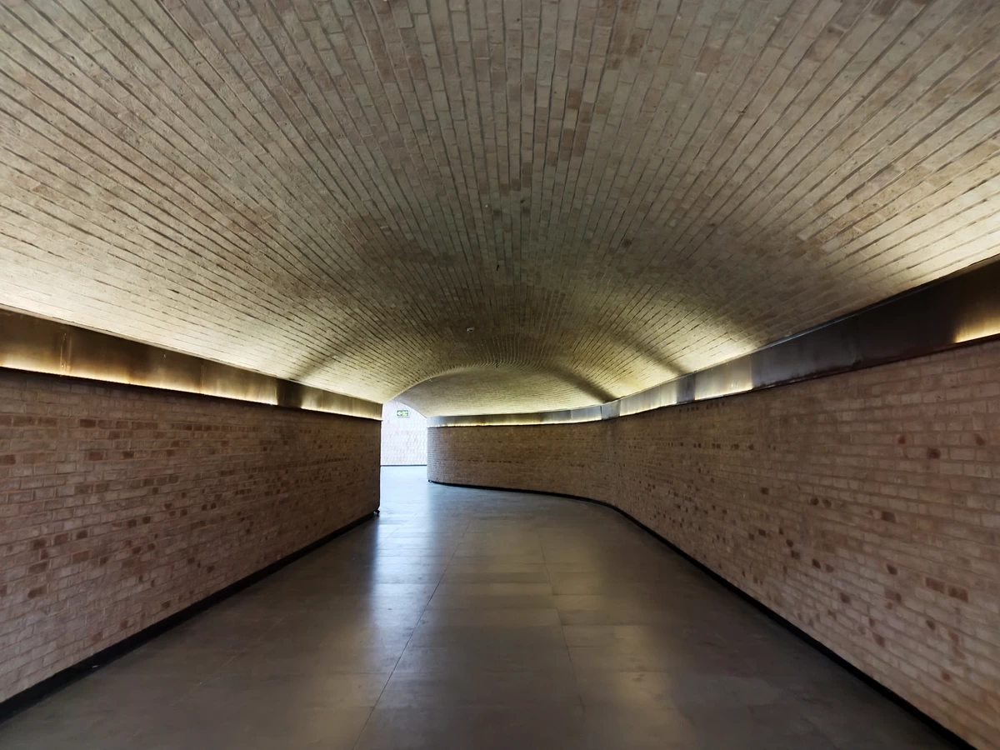
Chapter 15
The most important lesson from this experience was not that scientific misconduct can occur.
That fact is already well known.
The more difficult question is what happens afterward.
What happens when warnings are ignored?
What happens when evidence is disputed?
What happens when institutions are asked to investigate themselves?
What happens when correction mechanisms fail?
Lesson One was created in search of those answers.
The search continues.